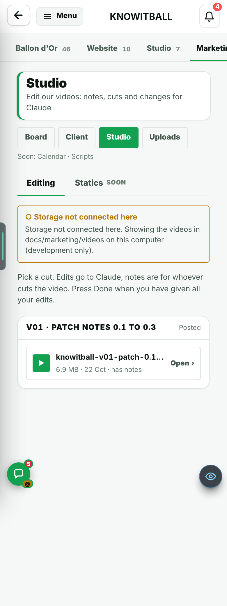
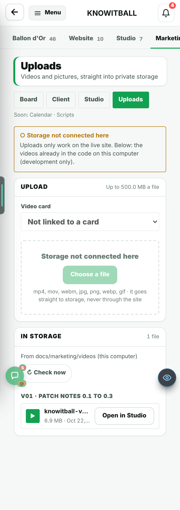
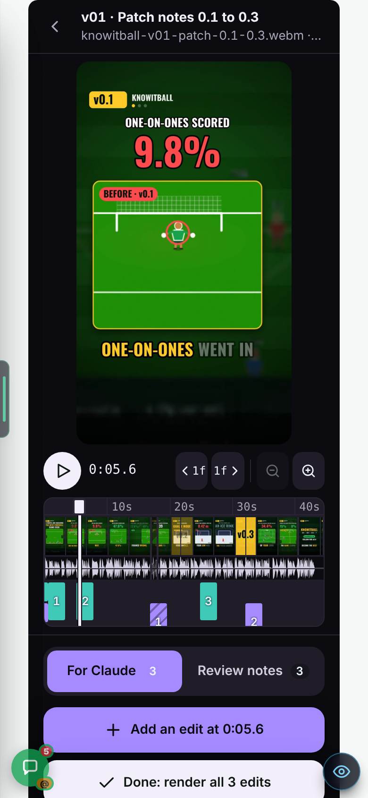
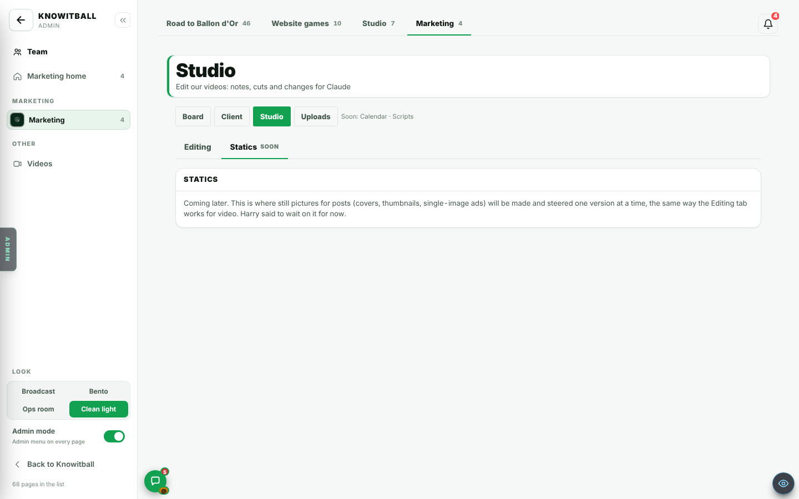

Players are back to a sane size, the Marketing Studio and uploads are in the admin, and highlights lose fewer chances.
Live: merged to main (PRs #760, #761, #763).
22 Oct 2026. Three rounds. In Admin → Patch notes this is v0.107h.
CHECK THESE
CHANGED: PLAYERS BACK TO SIZE B (PR #760)
Men are smaller again, the keeper is back to his old sizemeasured
Problem
Harry found the players "HUGE" in real match chances.
Why
The cause was B20's size C: both shrinks were dropped, so men came out 1.56 times the old size, about 28 px on a phone long-range chance. It was not the build-ups.
Fix
NEW_FIGURE_SCALE went from 1 to 0.8. The outfield shrink stays dropped. Men are now about 22 px (1.25 times the old). The keeper is back to his old size. The pitch is unchanged. Merged as PR #760.
Man on a phone long-range chance (px)
28 22
Size against the old size
1.56x 1.25x
ADDED: MARKETING STUDIO AND UPLOADS (PR #761)
Admin, Marketing has four tabs: Board, Client, Studio, Uploadsseen
Problem
Reasoned: videos and pictures for marketing had no home in the admin.
Why
Reasoned: nothing else held a cut, its notes and its files in one place.
Fix
Admin, Marketing now has the tabs Board, Client, Studio and Uploads. Merged as PR #761.

Studio on a phone. The yellow box is the local test build: storage is not connected there.
Uploads go straight from the browser to private storageseenreasoned
Problem
Reasoned: a big video sent through the site would be slow and heavy for the site.
Why
Reasoned: so the file goes from the browser straight to Cloudflare R2, never through the site.
Fix
A 15-minute signed link starts each upload.
Max 500 MB per file. Video and image only.
Max 30 files and 5 GB per admin per day.
The bucket is private. Playback uses 1-hour signed links.

Uploads tab. Shown on a local build with no storage keys, so the box says "Storage not connected here".
Studio, Editing: the newest editing suiteseen
Problem
Reasoned: notes on a video lived in chat, away from the video.
Why
Reasoned: the suite puts the notes on the timeline, at the moment they are about. It comes from Harry's other tool.
Fix
Timeline, filmstrip, waveform and lanes.
Two tabs that never mix: For Claude and Review notes.
Lock & render, and Done.
An auto-check lane, taste notes, and a mic.
The notes are saved as JSON next to the video in R2, not in the public code.

The suite, For Claude tab: 3 edits, Done: render all 3 edits.

Studio, Statics: "Soon".
Recorder: "Send to Marketing"reasoned
Problem
Reasoned: a recording had to be downloaded and uploaded by hand.
Why
Reasoned: the recorder now has a button that sends it to Marketing.
Fix
The admin recorder has a "Send to Marketing" button.
FIXED: HIGHLIGHTS DROP FEWER CHANCES AND RUN SHORTER (PR #763)
Match flow: New dropped 3 to 4% of chancesmeasured
Problem
With Match flow: New a match showed fewer chances than before: striker even 6.47 to 6.29 a match, strong 7.92 to 7.61.
Why
Only sim piece 4 dropped chances. Your miss's second ball was won in midfield, so the move never became a chance.
Fix
The second ball is now won on the edge of their box. Striker even 6.46, strong 7.84. With Match flow: Old (the default) the count never changed: 4.5 to 7 chances a match is normal, and a sub appearance gives fewer.
Chances a match (Match flow: New)
Striker, even: 6.47 → 6.29 (the fault) → 6.46
Strong: 7.92 → 7.61 (the fault) → 7.84
Real moments: 1 in 7 is now about 1 in 10measured
Problem
With the toggle on, about 1 chance in 7 was a real moment (11.7 to 15.1%).
Why
Headers and volleys joined at "1 in 4 of each kind".
Fix
Now 1 in 6 of each kind. That is about 1 in 10 (8.3 to 10.6%).
Real moments, share of chances (%)
11.7 to 15.1 8.3 to 10.6
Build-ups are shortermeasured
Problem
Each build-up ran 4.9 s, 22 to 27 s a match.
Why
Reasoned: the build-ups were cut too long.
Fix
About 3.1 s each, 14 to 17 s a match. Seen live: 2.4 to 2.9 s each, 13.9 s for 5.
A build-up (s)
4.9 3.1
All build-ups in a match (s)
22 to 27 14 to 17
Fouls and offsides lead in closer to the momentmeasured
Problem
A foul clip began about 6 s before the foul. An offside clip began 5.3 s before.
Why
Reasoned: the lead-in was longer than the moment needed.
Fix
Fouls now start 0.8 s before the foul: the lead-in was about 6 s and is now about 3.5 s. Offsides start 0.6 s before the pass: 5.3 s down to 4.4 s.
Foul lead-in (s)
6 3.5
Offside lead-in (s)
5.3 4.4
KNOWN ISSUES
Not tried with the real keys yet
The Studio and uploads were seen on a local build with no storage keys. A real upload needs Harry to send one video.
A dropped upload restarts
If an upload is cut, it starts again from the beginning.
Last save wins
If two people save the same cut at the same time, the last save wins.
HOW SURE WE ARE
Seen on a screen
Marketing tabs, Uploads, Studio list, the suite, Statics "Soon" (a local build with no storage keys)
Highlights build-ups live: 2.4 to 2.9 s each
Measured (numbers)
Chances a match, real-moment share, build-up and lead-in seconds
Man size in px
Reasoned, not seen
The Problem and Why lines marked "Reasoned" for the Marketing items
A real upload to R2
NEXT
Real upload test. Harry uploads one video to prove the keys work.